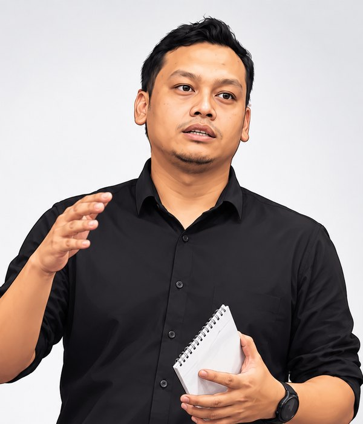

Sambung AI ke Revit, kemudian beri arahan untuk membina, membaca dan menyemak model anda. Sesi hands-on ini fokus pada peringkat model.
DALAM WEBINAR 29 NOV
Model
AI bina dan baca: schedule, sheet, data elemen
Audit & semak
Parameter kosong, naming salah, kategori silap
EARLY BIRD TAMAT DALAM
RM199 RM129 · jimat RM70
Hari
Jam
Minit
Saat
Hari terakhir: Ahad, 15 November 2026, 11:59 malam. Selepas itu harga kembali RM199.
CONTOH AI DALAM REVIT
Arahan anda
Tarikh
Ahad, 29 November 2026
Masa
10:00 pagi – 12:30 tengah hari
Format
Dalam talian, secara langsung dan amali
Bahasa
BM, istilah teknikal English
KENAPA SEKARANG
Revit 2027
Autodesk Assistant masuk terus ke dalam Revit (Tech Preview) — AI yang faham konteks model anda.
Sumber: Autodesk, April 2026
Revit MCP Server
Jun 2026: Autodesk keluarkan MCP server rasmi untuk Revit 2027. Mana-mana AI client yang menyokong MCP boleh disambung ke model.
Sumber: Autodesk, Jun 2026
27% sahaja
Firma AEC yang guna AI untuk automasi atau keputusan (Bluebeam AEC Technology Outlook 2026). Yang mula awal, ke depan.
Sumber: Bluebeam, Oktober 2025
TIGA CARA
Dari yang paling mudah untuk bermula, hingga yang paling fleksibel.
PANDUAN RINGKAS
Pilih yang mana?
Mula dari situasi anda sekarang. Setiap cara sesuai untuk keperluan yang berbeza.
Baru nak mula guna AI?
Tak perlu pasang apa-apa. Buka Revit, taip apa yang anda mahu, dan lihat AI bantu buat kerja harian.
Cara 1 · Pembantu AI dalam Revit
Nak tanya dan semak model?
Tanya terus tentang model anda dan dapat jawapan dalam beberapa saat, tanpa buka schedule satu per satu.
Cara 2 · AI kegemaran anda
Ada kerja yang berulang?
Kerja yang makan masa berjam-jam, seperti tukar nama atau nombor secara pukal, jadi satu klik sahaja.
Cara 3 · Automasi satu klik
Tak pasti? Tak apa. Ketiga-tiga cara ini kita tunjuk secara live dalam webinar, supaya anda boleh pilih yang paling sesuai.
Lihat agendaKANDUNGAN
Satu perkara yang kita tekankan: AI hanya sebaik data dalam model anda. Sebab itu sesi ini gabungkan AI dengan cara pengurusan maklumat ISO 19650.
01
3 laluan AI
Autodesk Assistant, MCP, dan pyRevit + Claude/ChatGPT. Bila guna yang mana, dan had setiap satu.
02
Setup live
Sambung AI client ke Revit langkah demi langkah, termasuk troubleshoot masalah biasa.
03
Audit model dengan AI
Cari parameter kosong, naming tak konsisten dan kategori salah tanpa schedule manual.
04
AI untuk koordinasi
Senarai elemen, ringkasan model dan draf laporan koordinasi dalam beberapa minit.
CONTOH YANG DIDEMO
Empat contoh ini didemo secara langsung dalam webinar, langkah demi langkah. Klik pada gambar untuk lihat saiz penuh.
Audit parameter kosong
Cari elemen yang parameter wajibnya belum diisi, contohnya Fire Rating pintu atau Mark yang hilang.
MCP · Autodesk Assistant
Semak standard view dan sheet
Cari view atas sheet yang tiada view template, guna skala berbeza atau diletak pada sheet yang salah.
MCP
Ringkasan model untuk mesyuarat
Kiraan elemen ikut kategori dan level, lalu draf ringkasan untuk laporan koordinasi.
MCP
Cipta schedule dengan arahan
Minta door schedule dengan medan yang anda perlukan, tanpa buka dialog Schedule Properties.
Autodesk Assistant · Revit 2027
AGENDA · 2.5 JAM
TERMASUK DENGAN TIKET
AI-READY REVIT TOOLKIT
Untuk peserta berdaftar33
semakan dalam AI-Ready Model Checklist
26
prompt siap guna dalam Prompt Library BIM
Muat turun PDF dan Excel. Kod akses dihantar selepas pendaftaran disahkan.
Buka toolkitUNTUK SIAPA
ANDA PERLUKAN
TENTANG MAZTECH ACADEMY
Belajar Revit dan BIM tak semestinya teori panjang dengan contoh yang jauh dari projek anda. Maztech Academy ialah platform latihan BIM untuk profesional AEC di Malaysia: webinar live, kelas Revit, program koordinasi dan komuniti, dalam Bahasa Malaysia.
Pemain industri, bukan sekadar pengajar
Diajar oleh BIM Manager yang mengurus model dan koordinasi untuk projek sebenar.
Konteks Malaysia
Berpandukan ISO 19650, CIDB dan JKR, dengan contoh projek kerajaan dan swasta.
Bawa pulang alat kerja
Setiap sesi ada template, checklist atau framework yang terus boleh guna dalam firma anda.
LIVE
Webinar live bulanan
Topik BIM dan Revit setiap bulan, secara langsung dengan demo dan sesi soal jawab. Webinar 29 November ini salah satu daripadanya.
KELAS
Kelas Revit online
Revit asas, Architecture, Structure dan MEP, dari kelas kumpulan hingga kelas one-to-one.
PROGRAM
BIM Coordinator Program
Koordinasi model dengan Revit, Autodesk Forma, ACC dan Navisworks, berdasarkan projek sebenar.
KOMUNITI
Komuniti Maztech
Kumpulan untuk soalan, tips BIM harian dan info kerja dalam industri. Percuma.
KOHORT PERINTIS
Maztech Academy baru bermula, dan itu kelebihan anda. Peserta awal dapat harga terendah, akses terus kepada pengajar, dan suara dalam membentuk program seterusnya.
Harga perintis
Early bird RM129, harga terendah untuk sesi ini. Tamat 15 November.
Terus kepada pengajar
Soalan anda dijawab sendiri oleh pengajar dalam sesi dan dalam komuniti Maztech.
Suara anda membentuk kursus
Maklum balas peserta webinar ini menentukan modul kursus AI for BIM.
Tempat pertama dalam waitlist
Peserta terus masuk waitlist kursus AI for BIM pada harga 50%.

PENGAJAR
BIM Manager · Pengasas Maztech Academy · Pembangun IZA Coordination Tools
Sebagai brand baharu, bukti terbaik kami ialah orang yang mengajar. Izani mengurus BIM untuk projek sebenar setiap hari: clash detection dan model coordination dalam Autodesk Forma dan Navisworks, hingga information management ISO 19650. AI dalam Revit bukan teori baginya; ia sebahagian daripada kerja harian.
Prinsipnya mudah: setiap sesi mesti meninggalkan sesuatu yang boleh terus digunakan dalam projek anda esok pagi.
Izani juga membangunkan IZA Coordination Tools, plugin Navisworks untuk mempercepatkan kerja koordinasi model.
Lihat pengalaman penuh dan plugin IZA Coordination ToolsHARGA
Satu sesi, kandungan sama untuk semua tiket. Harga early bird tamat 15 November 2026.
Pelajar
Dengan bukti status pelajar
RM89
Early bird
Sehingga 15 Nov 2026
RM129 RM199
Tamat dalam
hari · jam · minit
Biasa
Selepas 15 November 2026
RM199
SELEPAS WEBINAR
Webinar ini bermula di model. Kursus rakaman bersiri pula membawa AI ke seluruh kerja BIM, dari model ke koordinasi dan pengurusan maklumat. 9 modul, setiap satu berakhir dengan template atau skrip yang terus boleh guna dalam projek.
Asas
01 Asas AI untuk BIM
02 Model sedia-AI
Modelling
03 Autodesk Assistant
04 MCP dalam amalan
05 AI menulis kod pyRevit
06 Dynamo + AI
Koordinasi
07 AI untuk koordinasi: clash, isu, laporan
Pengurusan
08 AI untuk pengurusan maklumat
09 Tadbir urus AI dalam firma
Bentuk kelas
Harga waitlist
Diskaun 50%Harga biasa RM597
RM299
Pelancaran: Januari 2027. Harga waitlist hanya untuk yang mendaftar sebelum pelancaran. Peserta webinar 29 November terus dimasukkan ke waitlist.
Sertai waitlistFAQ
Saya guna Revit 2024 atau 2025. Boleh sertai?
Boleh. Autodesk Assistant dan MCP server rasmi Autodesk hanya untuk Revit 2027. Untuk versi lebih awal, laluan pyRevit dan MCP server komuniti masih berfungsi. Panduan setup akan terangkan pilihan mengikut versi anda.
Perlu tahu coding?
Tidak. Anda beri arahan kepada AI seperti bercakap dengan rakan sekerja. Setup melibatkan sedikit konfigurasi yang kami buat bersama langkah demi langkah.
Adakah AI akan ubah model saya?
Bergantung pada laluan. Autodesk Assistant dan pyRevit boleh membuat perubahan, manakala MCP server rasmi buat masa ini hanya membaca model. Dalam sesi, kita amalkan satu peraturan: uji pada salinan model dahulu.
Saya belum pernah guna AI. Sesuai untuk saya?
Sesuai. Anda cuma perlukan asas Revit. Kita mula dari cara menyambung AI ke Revit, kemudian guna arahan mudah untuk kerja yang anda sudah biasa buat.
Bagaimana pembayaran dan link sesi?
Tekan mana-mana butang Daftar untuk terus WhatsApp kami di +60 11-5444 9005, atau e-mel maztechresources@gmail.com. Kami hantar butiran bayaran, kemudian link sesi, panduan setup dan kod akses toolkit selepas pembayaran disahkan.